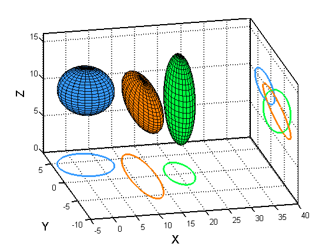

Visualize the Projection of 3D Gaussian Ellipsoids onto the 2D Plain
C = {[2 4 10] [12 0 10] [20 0 10]};
R = {[6 3 3] [3 6 3] [3 3 6]};
npoints = 25;
nellipsoids = length(C);
D = repmat(createStruct({'X', 'Y', 'Z'}), 1, nellipsoids);
f1 = figure; hold on;
colors = pmtkColors();
ax = [-5 40 -10 8 0 16];
axis([-5 40 -10 8 0 16]);
line(ax(1:2), ax([4,4]), ax([5,5]), 'LineWidth', 1.5, 'Color', 'k')
line(ax(1:2), ax([4,4]), ax([6,6]), 'LineWidth', 1.5, 'Color', 'k')
line(ax([2,2]), ax([4,4]), ax(5:6), 'LineWidth', 1.5, 'Color', 'k')
line(ax([2,2]), ax(3:4), ax([5,5]), 'LineWidth', 1.5, 'Color', 'k')
line(ax([2,2]), ax(3:4), ax([6,6]), 'LineWidth', 1.5, 'Color', 'k')
line(ax([2,2]), ax([3,3]), ax(5:6), 'LineWidth', 1.5, 'Color', 'k')
for i=1:nellipsoids
c = C{i}; r = R{i};
[D(i).X D(i).Y D(i).Z] = ellipsoid(c(1), c(2), c(3), r(1), r(2), r(3), npoints);
surf(D(i).X, D(i).Y, D(i).Z, 'FaceColor', colors{i});
contour(D(i).X, D(i).Y, D(i).Z, 'LineWidth', 2.5, 'LevelStep', 10, 'Color', colors{i})
end
view([-13, 30])
grid on
set(gca, 'XLim', [-5 40], 'YLim', [-10, 8], 'LineWidth', 1.5)
f2 = figure; hold on;
for i=1:nellipsoids
contour(D(i).Z, D(i).Y, D(i).X, 'LineWidth', 2.5, 'LevelStep', 10, 'Color', colors{i})
end
view([-145, -88])
grid on
axis(ax(1:4))
axis off
set(gca, 'Parent', f1, 'Position', [0.61, 0.07, 0.4, 0.8])
close(f2)
xlabel('X', 'FontSize', 14)
ylabel('Y', 'FontSize', 14)
zlabel('Z', 'FontSize', 14)
